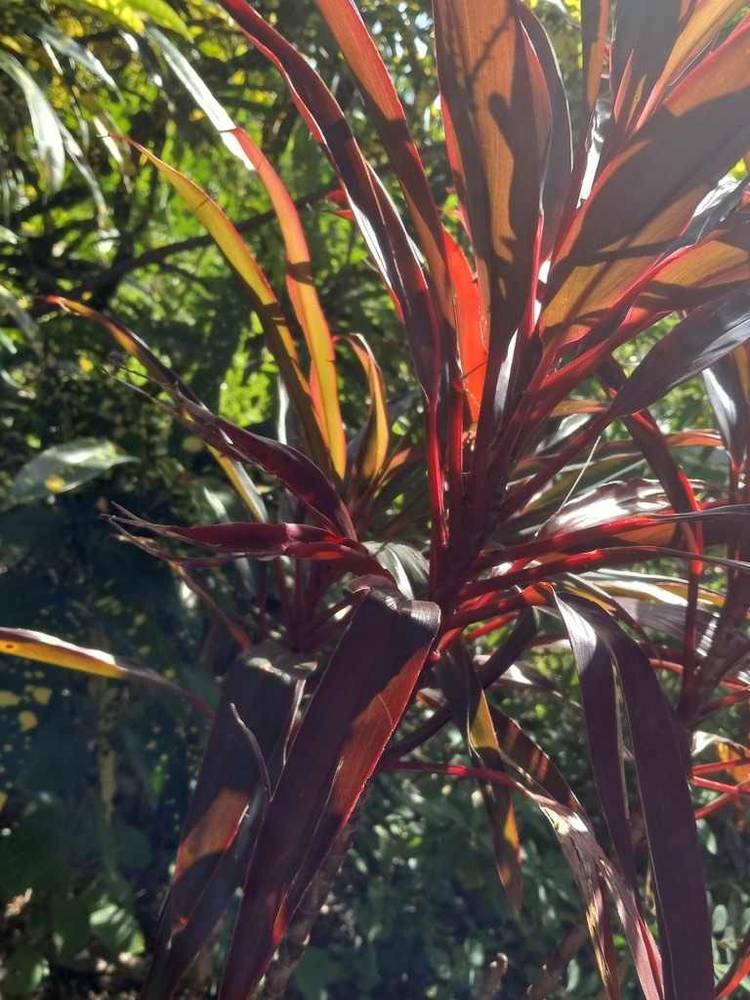

- Carries immense cultural significance across Polynesia as a sacred symbol of protection, prosperity, and agriculture.
- A historical, multi-purpose plant: leaves were fashioned into garments and food wrappers, while the rhizomes were baked sweet for food or fermented into the Hawaiian spirit okolehao.
- The green-leaved form rarely sets seed and propagates almost exclusively by stem cutting. A stem section with a node, left on damp soil, will root. Hawaiian voyagers carried ti stems on long ocean passages and planted them at every new landfall.
- Toxic to dogs and cats despite being edible to people.
Non-native. Native to tropical Southeast Asia, New Guinea, northeastern Australia, and parts of the Pacific. Carried throughout Polynesia by human migration. Member of Asparagaceae — recently reclassified from Agavaceae.
- The ti plant was one of the most deliberately transported plants in human history. Polynesian voyagers carried stem cuttings on ocean passages of thousands of miles and planted them at every new landfall.
- By the time Europeans encountered the Pacific, ti was established from Southeast Asia through Melanesia, Micronesia, Polynesia, and Hawaii — a distribution almost entirely the result of human transport over centuries of migration.
- In Hawaiian culture the plant was sacred to Lono, god of agriculture and fertility. Planting ti along a home's boundary was a declaration of protection.
- Leaves were used for everything practical: food wrappers for imu (earth oven) cooking, rain capes, sandals, hula skirts, and lashing material. The rhizomes were baked in an imu until sweet and edible, or fermented into okolehao, a traditional Hawaiian spirit.
- The sweetness is chemistry: the roots store energy as fructans (inulin-type polysaccharides) the body cannot digest raw, and long, slow baking breaks them down into simple, intensely sweet fructose — turning a fibrous, woody root into a high-calorie food.
- The green-leaved form rarely flowers or sets seed in cultivation. It is one of the most vegetatively reproduced plants known — a stem section with a node placed on damp soil will root reliably. This characteristic made it ideal as a voyaging plant: compact, indestructible in transit, and easily established on arrival.
- One note for modern gardeners: the brilliant pink, burgundy, and variegated ti plants common in Florida landscaping today are highly selected ornamental cultivars, not the plant the navigators carried.
- They tend to be more cold-tender than the rugged, deep-green ancestral ki, and the showiest forms can scorch in harsh direct sun — a reminder that the voyaging plant and the patio plant, though the same species, are not quite the same tool.
As an exotic species, it offers minimal ecological support to native Florida wildlife beyond occasional visitation by generalist pollinators. Its inclusion in the collection serves a primarily educational, ethnobotanical purpose.
Small, tubular, white to lavender-pink, in large branching clusters on a tall stalk. Rarely produced on the common green-leaved form in cultivation.
Small red to black berries. Rarely produced.
Long, strap-like (to about two feet), glossy green (standard form) or variously colored in ornamental cultivars (red, purple, cream, multicolored). Arranged in a rosette at the top of an unbranched cane-like stem.
Thick, fleshy, rich in fructans (inulin-type). Edible when properly prepared. This is the part that gives rise to the spiritual and practical associations in Polynesian culture.
Stem cuttings root readily. The Hawaiian term for a stem cutting used for planting is a ki.
The strap leaves in a crown at the top of a cane-like stem are distinctive. In the park, look for the unbranched stem with leaves clustered at the tip. Not to be confused with the unrelated New Zealand cabbage tree (Cordyline australis).
Keep dogs and cats away from this plant — the ASPCA lists Ti Plant as toxic to pets, its saponins causing vomiting, drooling, loss of appetite, and depression if the leaves are chewed.
For people it's harmless and even useful: the rhizomes are a traditional Polynesian food, eaten baked or fermented, and normal handling is safe. It simply isn't grown here as a casual food plant.


- © teschaim (CC-BY-NC), via iNaturalist
- © Randall Carter (CC-BY-NC), via iNaturalist